第七章 信息计量理论与工具
前面几章分别讨论了怎样检索文献、撰写综述、探索学科前沿和管理个人文献库。本章把视角再向外推一步：当文献从几十篇增加到几千篇时，研究者怎样观察一个领域的知识结构、合作关系和主题演化？信息计量提供了一套把文献记录转化为数据、关系和证据的方法。
信息计量经常以网络图的形式出现，因而容易被误解为“把数据导入软件并生成一张图”。实际上，一项可靠的分析至少要经历六次判断：研究问题是否适合计量回答，数据库是否覆盖研究对象，导出字段是否支持所选方法，名称与术语是否清洗，算法参数是否有依据，图谱解释是否得到原文验证。软件只负责计算其中一部分，不能替代这些判断。
本章依次讨论信息计量的概念与用途、文献系统的基本规律、文献记录之间的关系、完整分析流程、常用软件与平台，并用“生成式人工智能与教师教育”构造一个贯穿案例。学习结束后，读者应能根据研究问题选择数据和方法，读懂常见知识图谱，说明分析参数与证据边界，并把图谱线索转化为可以被复核的文字结论。
7.1 从文献计量到信息计量
五个相互交叠的视角
文献计量、科学计量、信息计量、网络计量和替代计量都使用数量方法研究知识活动，但它们关注的对象和痕迹不同。它们不是五个彼此排斥的学科盒子，而是观察同一知识生态的不同镜头。
| 视角 | 主要对象 | 常见数据痕迹 | 适合回答的问题 | 不能直接推出的结论 |
|---|---|---|---|---|
| 文献计量 | 论文、图书、期刊、作者、参考文献 | 发文、引文、关键词、合作关系 | 某领域怎样增长，知识基础和主题结构是什么 | 某篇论文一定高质量 |
| 科学计量 | 科研活动及其组织 | 论文、项目、基金、专利、机构与人才流动 | 学科、机构、国家和政策环境怎样变化 | 某项政策必然造成了指标变化 |
| 信息计量 | 更广泛的信息生产与传播 | 文献、报告、新闻、网页及其他记录 | 信息怎样分布、传播、被使用和老化 | 所有不同来源的数据可以无差别比较 |
| 网络计量 | 网络空间中的资源与连接 | 网页链接、访问、平台互动、传播路径 | 在线资源之间如何连接，信息怎样扩散 | 链接或访问等同于学术认同 |
| 替代计量 | 传统引文之外的关注痕迹 | 下载、收藏、新闻、博客、政策文件、社交媒体提及 | 成果在哪些场景受到早期关注或社会传播 | 热度等同于长期学术影响或社会效益 |
例如，一篇教师教育论文在学术期刊中被引用，属于传统引文痕迹；被政策报告采用，说明它进入了政策传播场景；在社交媒体上被大量转发，则说明它获得了公共关注。三种痕迹都值得研究，但含义不同，不能合并成一个笼统的“影响力”。
先确定对象，再确定指标
任何计量研究都应先明确分析单位。统计论文数量时，单位是文献；绘制作者合作网络时，单位变为作者；分析机构合作时，同一篇论文又可能连接多所机构。若把论文数、作者数和机构数放在同一张表中却不说明单位，数值就失去可比性。
同样，指标必须与概念匹配。被引次数记录的是数据库可见范围内的引用事件，不是论文全部价值；下载量记录的是访问行为，不是阅读完成；关键词频次记录的是表述习惯，不等于理论重要性。计量分析的第一原则可以概括为：指标是概念的操作化痕迹，不是概念本身。
7.2 信息计量能做什么，不能做什么
发现文献系统中的结构与变化
信息计量的用途可以概括为四类：发现科学规律，识别热点、前沿与创新，支持科研政策评价，帮助研究者开展研究。这四类用途分别对应“描述规律—发现线索—辅助评价—支持行动”的层次。
第一，计量分析可以描述文献系统的宏观结构。例如，一个主题的发文量是否持续增长，哪些期刊构成主要来源，作者合作是否形成稳定团队，研究主题是否出现分化。它把原本分散在大量论文中的关系压缩成可观察的分布和网络。
第二，计量分析可以发现热点与前沿的候选线索。近期发文快速增加、关键词突然活跃、最新论文共享相似参考文献、高被引论文形成新的聚类，都可能表明研究注意力正在转移。不过，“高频”更接近当前规模，“突现”更接近短期加速，“前沿”还需要新颖性、连续产出和代表文献内容共同支持。第五章已经讨论过前沿探索，本章关注的是这些判断怎样由数据关系产生。
第三，计量指标可以为科研管理和政策分析提供证据。例如，比较项目实施前后的合作网络、研究主题和成果可见度，可以描述变化；但若要声称“政策导致了变化”，还要控制学科总体增长、入选对象原有能力、同期其他政策等因素。只有前后数量对比而没有对照或反事实，不能完成因果归因。
第四，计量地图可以帮助个人进入陌生领域。作者、机构、期刊、主题与代表文献的关系图，相当于一张领域地图，可帮助研究者安排阅读顺序、识别不同学派和发现交叉路径。但是地图只负责导航，真正的综述仍需回到论文的研究问题、理论、方法、结果和局限。
| 研究问题 | 可用方法或指标 | 必须补充的证据 | 不宜作出的推断 |
|---|---|---|---|
| 一个主题是否受到更多关注 | 年度发文量、关键词频次、突现检测 | 检索口径、总体文献增长、代表论文 | 发文增长等同于研究质量提高 |
| 哪些文献构成知识基础 | 共被引、直接引文、被引分布 | 引用语境和核心文献精读 | 被引最多就是理论最正确 |
| 近期研究形成哪些分支 | 文献耦合、近期关键词共现、主题模型 | 各聚类代表文献和方法差异 | 算法聚类就是公认学科分类 |
| 哪些作者或机构存在合作 | 合著网络、机构网络、国家网络 | 作者与机构名称消歧 | 连线存在就代表深度合作 |
| 某项政策是否有效 | 产出、合作、主题和影响指标 | 对照组、时间趋势、情境与质性证据 | 指标变化由政策单独造成 |
| 某成果是否具有创新性 | 新组合、跨域引用、颠覆性等线索 | 原文内容、同行判断、后续应用 | 单一创新指标可以替代专家评价 |
7.3 文献系统的基本规律
文献增长、引用机会与文献老化
现代学术文献通常随时间增长，但数据库中的上升曲线不一定全部来自真实研究活动的增长。数据库扩大收录范围、期刊更改出版频率、会议文献被纳入、检索词含义变化，都可能改变曲线。因此，年度发文量必须与数据库覆盖和检索策略一起解释。必要时可同时报告某主题文献占所属学科全部文献的比例，以区分“整个数据库都在增长”和“该主题相对增长更快”。
文献老化指文献的使用或被引概率通常随时间下降。新成果不断出现，研究问题、技术条件和政策环境也会变化，旧文献因而逐渐退出日常引用。然而，经典理论、测量工具和奠基性方法可能长期被引用，所以“年代久远”并不等同于“已经失效”。
增长与老化共同造成一个重要问题：不同年份的论文拥有不同的引用机会。十年前的论文已经积累较长时间，新发表论文则还没有完整引用窗口。比较时可限定相同的发表后窗口，使用按学科和年份归一化的指标，或至少把年份分层报告。否则，旧论文天然占优，新论文天然吃亏。
洛特卡定律、齐普夫定律与累积优势
洛特卡定律描述作者生产率的偏斜分布：多数作者只发表少量成果，少数作者发表很多成果。经典形式近似为 P(X=x) ∝ x^-α，其中逆平方只是常见的历史形式，并不是所有学科都必须满足的固定常数。实际研究应估计分布、说明时间窗，并处理作者重名、改名和团队署名变化。
齐普夫定律描述词频与词频排名之间的幂律关系，可写成 f(r) ∝ r^-s。少数词非常常见，大量词只出现一两次。对关键词和摘要做分析时，高频的“研究”“教育”“学生”等词可能缺乏区分度，低频词又可能只是拼写差异。因此，需要停用词、同义词表和最低频次阈值共同改善主题表达。
累积优势说明已经获得资源或关注的对象更容易继续获得资源或关注。可见度高的作者更容易被邀请合作，核心期刊更容易获得投稿，已被大量引用的论文更容易再次进入研究者的参考文献。被引量因而同时包含内容贡献、传播机会、数据库可见度和累积优势，不能被简单解释为“质量分数”。
这三种规律共同提醒我们：文献数据常呈长尾分布，并不满足“多数对象都接近平均数”的直觉。只报告平均被引次数可能被少数极高值拉高；只选择最高产作者，又会忽略新进入者和小规模但有特色的团队。中位数、分位数、完整分布和网络位置通常比单一平均数更有解释力。
高被引、高使用与颠覆性只是不同线索
高被引论文说明其在特定数据库、学科和时间窗内频繁进入后续论文的参考文献；高使用论文说明其近期被浏览、下载或收藏较多；二者的时间节奏和行为含义不同。高使用可更快反映关注，却更容易受课程阅读、新闻事件、平台推荐和访问机制影响。
颠覆性指数试图通过后续论文怎样引用“目标论文”和“目标论文的参考文献”，判断新成果是更倾向于替代旧知识路径，还是巩固既有知识路径。若后续论文只引用目标论文而较少再引其参考文献，通常被解释为更具颠覆性；若二者经常同时被引，则更接近发展或巩固既有路径。Funk与Owen-Smith的原始研究给出了这一网络指标的构造思路。这一指标提供了不同于被引量的视角，但仍会受到参考文献长度、学科引用习惯、数据库覆盖和引用窗口影响，不能作为创新性的自动裁决器。
7.4 从文献记录到关系网络
数据字段决定可以做什么分析
一条完整的文献记录可能包含题名、作者、机构、年份、来源、摘要、关键词、参考文献、DOI、基金、文献类型和被引信息。软件不能从缺失字段中“推算”出可靠关系。例如，没有参考文献字段就不能进行严格的共被引或文献耦合分析；只有题名而没有摘要，文本主题只能依赖较少信息；机构字段不完整，合作网络就会漏边。
| 关键字段 | 可以支持的分析 | 常见质量问题 | 清洗重点 |
|---|---|---|---|
| 题名、摘要 | 词频、术语共现、主题识别 | 缺失摘要、中英文混排、乱码 | 统一编码、语言和分词规则 |
| 作者关键词、主题词 | 共词网络、主题演化 | 同义词、缩写、单复数、泛词 | 词表合并、停用词、保留原词映射 |
| 作者 | 生产率、合著网络 | 同名、改名、姓名次序差异 | ORCID辅助、机构与主题交叉核验 |
| 机构、国家 | 合作网络、机构比较 | 名称变体、院系层级不一 | 统一机构层级和标准名称 |
| 参考文献 | 直接引文、共被引、文献耦合 | 格式差异、缺失DOI、错误匹配 | 标准化作者、年份、来源和标识符 |
| 年份 | 增长、突现、主题演化 | 在线发表与正式出版年份不同 | 预先规定年份口径 |
| 来源、文献类型 | 期刊分布、来源比较 | 期刊更名、增刊、会议论文混入 | 统一来源名，分层文献类型 |
| DOI及其他标识符 | 去重、链接原文、跨源合并 | 缺失、大小写和前缀不一 | 规范化并与题名、作者联合去重 |
导出前应保存数据库名称、检索式、检索日期、结果数量、筛选条件和导出格式；导出后保留原始文件，只在副本上清洗。这样，当同义词表或纳入标准改变时，分析可以重建，而不是依赖一份来历不明的“最终数据”。
五类关系回答不同问题
| 关系 | 连线如何形成 | 更适合观察 | 时间特征 | 解释警示 |
|---|---|---|---|---|
| 直接引用 | 论文A引用论文B | 知识传播路径和前后联系 | 有方向，受发表先后约束 | 引用动机可能是支持、批评或背景 |
| 共被引 | 后续论文同时引用A和B | 较稳定的知识基础和经典组合 | 需要等待后续引用积累 | 新论文常因时间短而处于劣势 |
| 文献耦合 | A和B共享参考文献 | 当前研究分支和相近问题 | 论文发表时即可计算 | 共享参考文献不等于结论一致 |
| 共词 | 关键词或术语在同一记录出现 | 主题结构和概念组合 | 可按时间切片观察变化 | 高度依赖分词、词表和阈值 |
| 合作 | 作者、机构或国家共同署名 | 社会协作结构 | 可观察团队形成与变化 | 共同署名不等于实际贡献相同 |
共被引与文献耦合最容易混淆。可以设想三篇新论文都引用了相同的两篇经典论文：三篇新论文之间形成文献耦合，两篇经典论文之间则因被共同引用而形成共被引。前者从“共同回望什么”判断研究接近性，后者从“后来者把谁放在一起”判断知识基础。
怎样读一张知识图谱
读图前先查图例和方法说明，再依次识别五个要素。
- 节点是什么：论文、作者、机构还是关键词。不同节点不能用同一套语言解释。
- 连线是什么：共现、共被引、耦合还是合作。连线只表示规定的关系，不自动表示因果、认同或理论相似。
- 节点大小是什么：出现次数、被引量、总链接强度或其他权重。大小必须由图注说明。
- 颜色是什么：可能表示算法聚类、平均发表年份、时间切片或密度。不能看到同色就直接称为“学派”。
- 距离与位置是什么：通常是布局算法在二维空间中的近似表达，中心位置也未必等同于“最重要”。
网络图是一种信息压缩。节点过少会遗漏结构，节点过多又会形成“毛线团”。阈值不是为了让图好看，而是在信息完整性和可读性之间作出有依据的取舍。正文应同时提供网络规模、纳入阈值、聚类方法和代表节点，避免读者只看到经过美化的局部。
计数、归一化和时间窗会改变结果
在合作网络中，一篇由十位作者完成的论文若采用完整计数，每位作者都获得一次论文计数，所有作者对都形成完整关系；若采用分数计数，这篇论文的权重会在作者之间分配，从而降低超大团队对网络的支配。两种方法没有绝对优劣，但必须与问题一致并在报告中说明。
不同学科的发文量和引用密度差异很大。医学论文的参考文献数量和被引速度可能与教育史论文完全不同，直接比较原始被引次数容易把学科习惯当成质量差异。跨学科比较应优先使用按学科、年份和文献类型归一化的指标，同时说明分类体系；任何归一化结果都依赖“把论文分到哪个比较组”。
| 参数 | 常见选择 | 何时有用 | 报告时至少说明 |
|---|---|---|---|
| 计数方法 | 完整计数、分数计数 | 合著、机构合作、关键词共现 | 权重怎样分配及选择理由 |
| 纳入阈值 | 最低出现次数、最低被引次数、前N项 | 控制网络规模和噪声 | 阈值、筛选前后节点数、敏感性检查 |
| 时间设置 | 全时段、分段、滑动窗口、相同引用窗 | 增长、演化、突现和影响比较 | 起止年、切片长度、年份字段口径 |
| 相似度与聚类 | 关联强度、余弦等；不同聚类参数 | 将关系强度转化为群组 | 软件、算法、分辨率及是否人工调整标签 |
| 归一化 | 按年份、学科、类型或网络规模 | 跨时间或跨领域比较 | 参照组、数据库和计算口径 |
7.5 一项可复核的分析怎样完成
第一步：把“画图”改写成研究问题
“用CiteSpace分析生成式人工智能”不是研究问题，只是预先指定工具。更可操作的问题包括：2019年以来生成式人工智能与教师教育研究的主题怎样演化？哪些理论文献构成其知识基础？不同国家或机构形成了怎样的合作结构？新近论文围绕哪些共同参考文献形成研究分支？每个问题对应的数据字段和关系网络不同。
第二步：设计检索与纳入范围
检索式要覆盖核心概念及其变体，并记录数据库、字段、时间、文献类型、语言和检索日期。若中英文数据库合并，应先判断其参考文献格式、作者字段和来源覆盖能否兼容。不能因为软件接受两个文件，就认定两个数据库的数据口径一致。
第三步：保留原始数据并清洗实体
建立原始层、清洗层和分析层。原始层不改动；清洗层完成去重、作者和机构消歧、关键词合并、停用词处理、文献类型筛选；分析层只保留当前方法需要的字段。清洗记录至少包括“原值—标准值—规则—日期”，使别人可以判断“GenAI”“generative AI”“生成式人工智能”为什么被合并。
第四步：选择关系、计数和参数
研究知识基础可选共被引，观察近期分支可选文献耦合，解释主题内容可选共词，观察协作可选合著网络。随后再确定时间切片、计数方式、纳入阈值、相似度和聚类参数。若改变一个合理阈值就导致主要聚类完全不同，应报告这种不稳定性，而不是只保留最好看的版本。
第五步：从统计表进入图谱
先查看数据量、年份分布、缺失字段、文献类型和高频对象，再生成网络。基础统计可以及时发现异常：某一年文献骤降可能是数据未导全，某个作者异常高产可能是同名合并，某个关键词占据网络中心可能只是检索词本身。
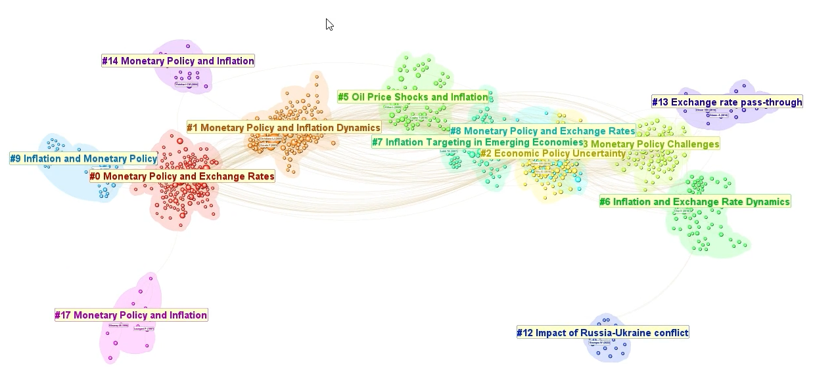
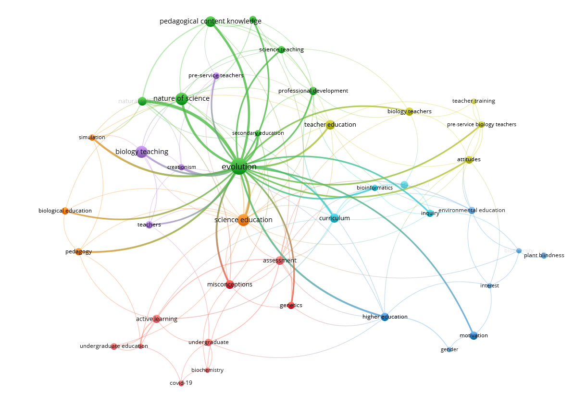
第六步：回读代表文献并验证标签
每个聚类至少选择若干代表文献，核对它们的研究对象、理论、方法和发现。代表文献可以综合考虑聚类内连接、被引量、时间位置和内容典型性，而不应只取最高被引的一篇。自动生成的聚类标签若过宽、过窄或偏离内容，可以在保留原标签记录的同时，用人工概括的名称报告。
第七步：把结果写成“证据—解释—边界”
结果段落应先说明观察到什么，再解释可能意味着什么，最后限定结论。例如：“2019—2022年聚类A以技术接受和使用意愿为主，2023年后聚类B中的评价素养与伦理治理词频上升。代表论文显示，研究问题正从采纳意愿扩展到教学整合与风险治理。由于数据仅覆盖所选数据库和检索式，该变化不能代表全部教师教育研究。”这比“图谱显示该领域蓬勃发展”更可核验。
7.6 常用分析工具怎样选择
CiteSpace：时间切片、突现与知识演化
CiteSpace常用于共被引、关键词共现、突现检测、聚类和时间线分析，适合观察一个知识结构怎样在时间中形成。CiteSpace官方网站持续提供软件与学习材料，具体版本和菜单会更新，教材更应掌握时间切片、节点类型、突现和聚类解释的原理。
使用CiteSpace时，数据字段必须与分析类型匹配。若某中文数据库导出记录不含参考文献，便不能仅凭题名和关键词完成严格的共被引分析。混合不同来源时，还要检查作者、机构、来源缩写和参考文献格式是否能够统一。
VOSviewer：关系网络与清晰可视化
VOSviewer官方网站将其定位为构建和可视化文献计量网络的工具，可处理引用、文献耦合、共被引、合作和术语共现等关系。它的网络视图、叠加视图和密度视图适合分别观察结构、时间或其他得分、以及局部聚集程度。导入来源与功能会随版本更新，使用时应查看官方手册，而不是沿用旧版界面或固定清单。
VOSviewer看似容易上手，但计数方式、最低出现次数、同义词表和布局设置都会改变结果。截图之外还应保存映射文件、网络文件、同义词表和参数记录，使他人能够重新生成图谱。
bibliometrix与Biblioshiny：从界面探索到脚本复现
bibliometrix是R环境中的开源科学计量分析工具，Biblioshiny则提供图形化界面。初学者可以用Biblioshiny了解描述统计、来源、作者、概念结构和主题演化，再逐步把关键步骤转为R脚本。安装入口可以很简单：
install.packages("bibliometrix")
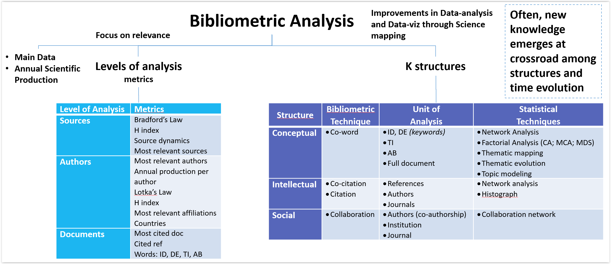
脚本路径的优势是能保存数据转换、筛选条件、函数参数和图形代码。可复现并不意味着结果一定正确，但它使错误更容易被发现，也使修改检索范围后能够重新运行，而不是手工重复所有界面操作。
ITGinsight：多类科技文本的可视化挖掘
ITGinsight案例说明，信息计量可以扩展到论文、专利、报告和网络文本。此类工具可以构建合作、共现、耦合、引用与演化关系，并输出网络、热力、密度、地图和矩阵等图形。其价值不在于把所有文本“装进同一软件”，而在于针对不同对象定义可比较的字段和关系。
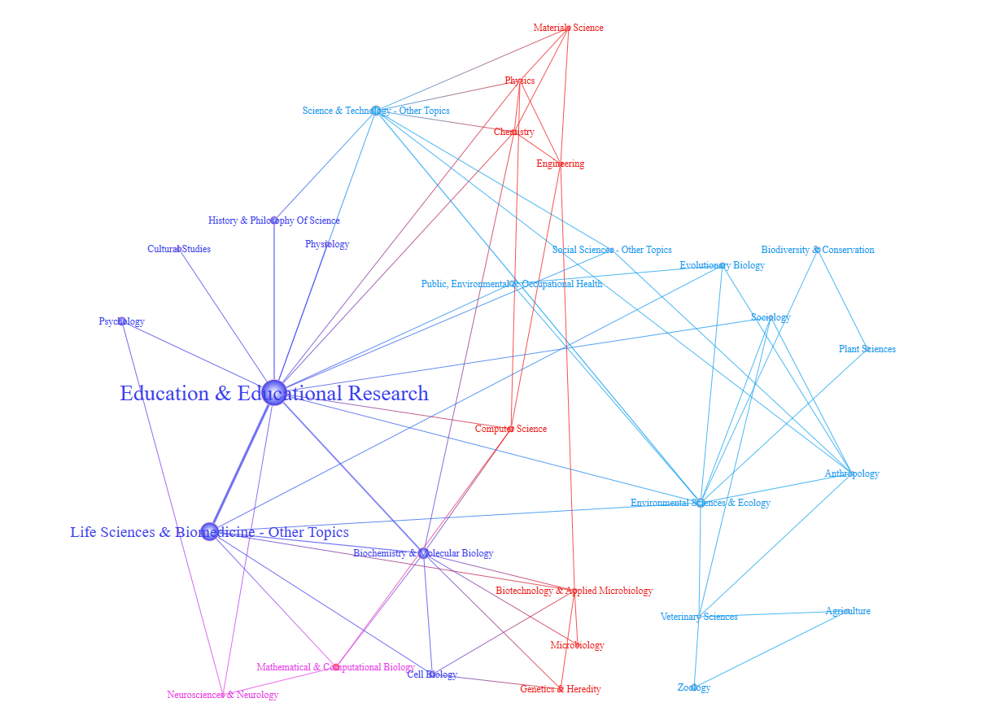
论文引用、专利引用和社交媒体转发的产生机制不同，即使都能画成连线，也不能直接放进同一网络比较。多源分析宜采用分层呈现：先分别构建各类网络，再通过共同标识符、机构或主题建立有限连接。
| 工具 | 较适合的任务 | 可复现资产 | 学习重点 | 主要风险 |
|---|---|---|---|---|
| CiteSpace | 突现、时间线、共被引聚类、知识演化 | 项目文件、参数、原始与清洗数据、图表 | 时间切片、节点类型、聚类质量和突现解释 | 只看自动标签，忽略字段兼容性 |
| VOSviewer | 合作、共词、耦合、共被引的网络与密度展示 | map/network文件、词表、参数、图表 | 计数方式、阈值、距离与聚类含义 | 为追求清晰任意删节点 |
| bibliometrix/Biblioshiny | 描述统计、科学知识结构、主题演化与可复现分析 | R脚本、会话信息、数据和输出 | 数据转换、函数参数、统计与图谱衔接 | 只保存界面截图或代码不核验含义 |
| ITGinsight等多源工具 | 论文、专利、报告等科技文本的关系挖掘 | 数据字典、来源映射、分析规则 | 不同对象的字段与关系定义 | 把不同来源的行为痕迹当成同一种关系 |
没有“对所有任务最好的软件”。课程作业可用一款工具完成清晰的小问题；论文研究则可组合使用，例如用bibliometrix完成描述统计和可复现清洗，用VOSviewer呈现网络，再回到文献管理软件精读代表论文。组合工具时要保证同一数据版本、同一清洗规则和可追踪的中间文件。
7.7 平台型工具怎样辅助前沿观察
本地软件通常由研究者准备数据和参数，平台型工具则把数据库、分类体系、指标和可视化预先整合。平台能快速提供宏观线索，但用户对底层语料和算法的控制更少，因此更需要阅读方法说明。
ESI：从高被引论文观察宏观表现与研究前沿
Essential Science Indicators（ESI）基于Web of Science核心合集中的特定文献类型和引文数据，按较宽的研究领域提供高被引论文、热点论文、机构和国家等分析。ESI官方帮助说明其使用滚动时间窗并定期更新，具体纳入年限和更新时间应以当期页面为准。
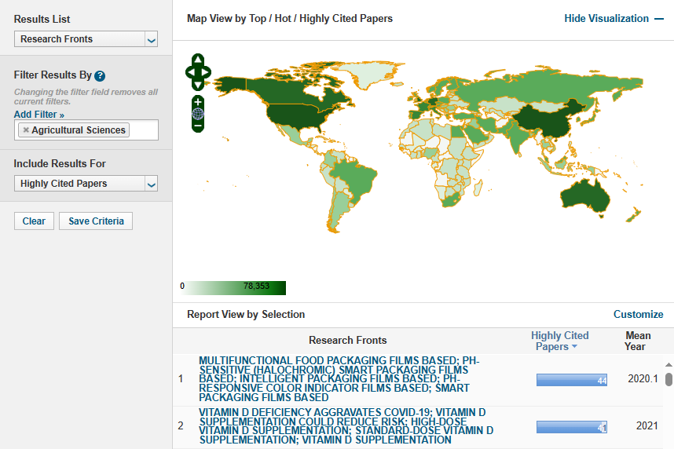
ESI研究前沿通常以高被引论文之间的共被引关系形成聚类，再根据聚类论文概括主题。高被引论文筛选使它适合观察受到显著引用关注的方向，却可能弱化尚未积累引用的新研究、小语种研究和地方性议题。前沿名称只是进入聚类的入口，仍应阅读核心论文并核对研究内容。
SciVal：Topic、Topic Cluster与Prominence
SciVal基于Scopus数据提供研究表现、合作和趋势分析。SciVal Topics官方说明指出，Topics通过直接引用关系把论文组织为主题，并进一步汇集为更宽的Topic Clusters；在这套分类中，一篇论文归入一个Topic，一个Topic归入一个Topic Cluster。这种“唯一归类”便于统计，但现实论文可能横跨多个问题，因此平台分类不应被当成唯一学科身份。
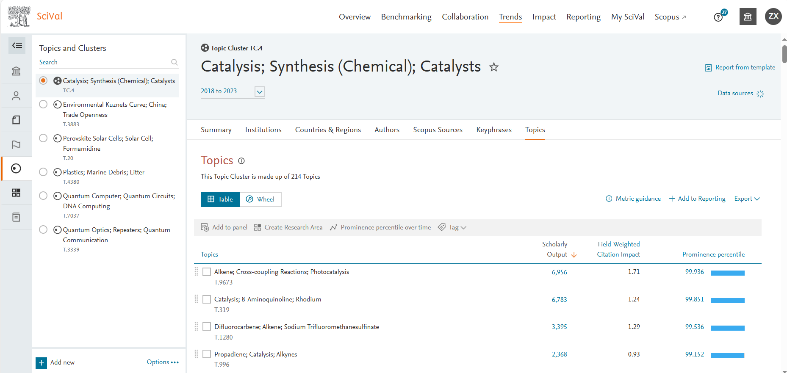
Topic Prominence用于描述主题近期的发展势头与可见度，综合近期引文、浏览和来源平均CiteScore等信号。它回答的是“哪些主题当前更受关注”，不是“哪些主题在理论上最重要”。平台还可标记近期快速形成的新主题，但新出现也可能来自数据库更新、术语替换或短期事件，需要连续观察和内容验证。
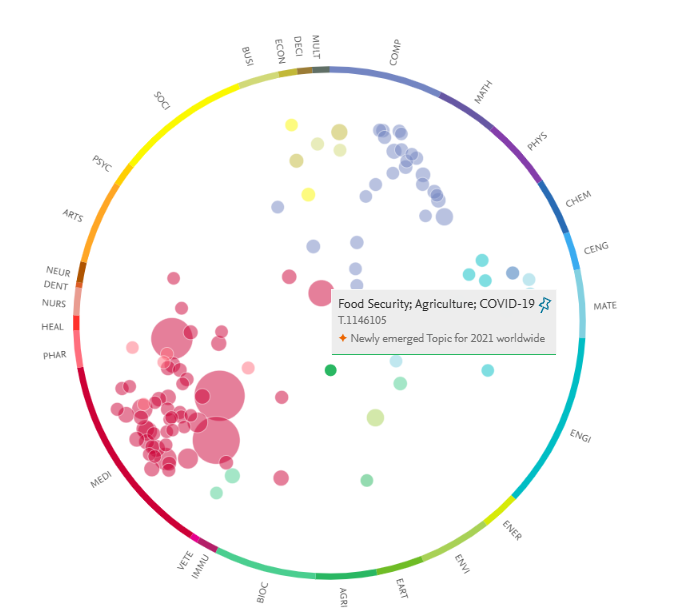
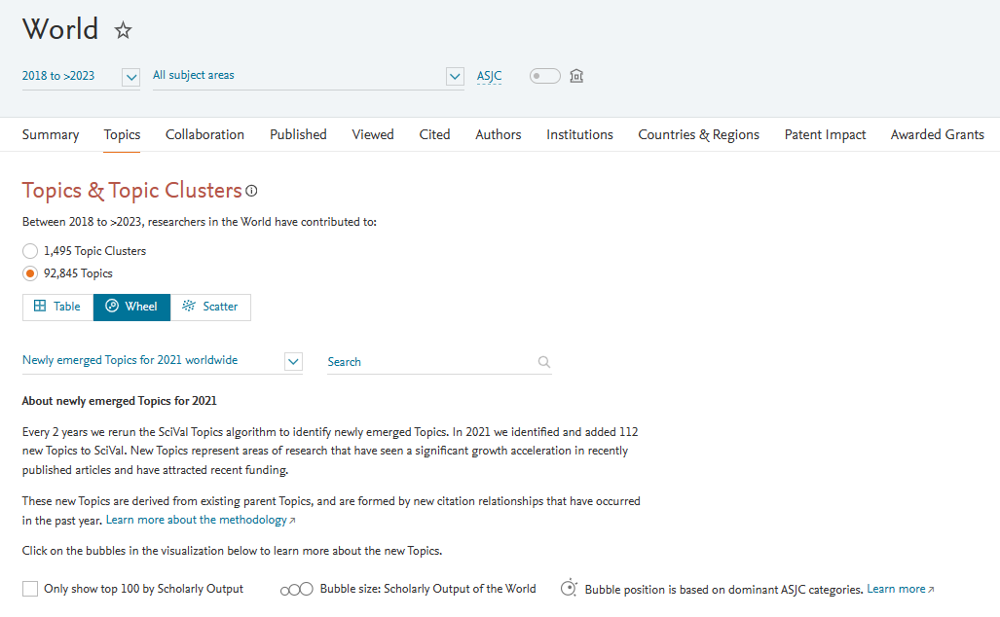
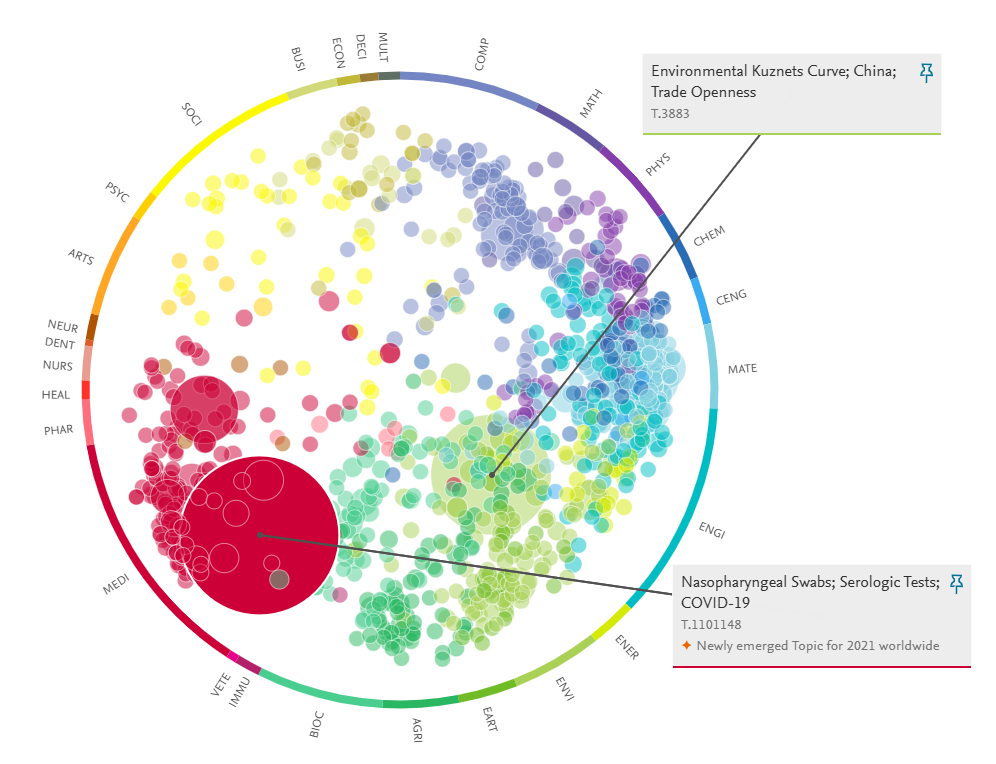
Research Horizon Navigator：新兴主题的早期信号
Research Horizon Navigator是InCites中的研究前沿分析模块，利用近期引用活动和跨学科关系发现新兴主题，并通过自动化方法生成主题名称；平台可把主题进一步带入Web of Science或InCites分析。自动命名提高了浏览效率，但标签可能概括不准，尤其是方法术语相近而研究对象不同的主题。
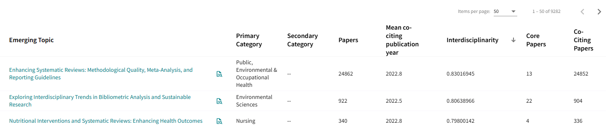
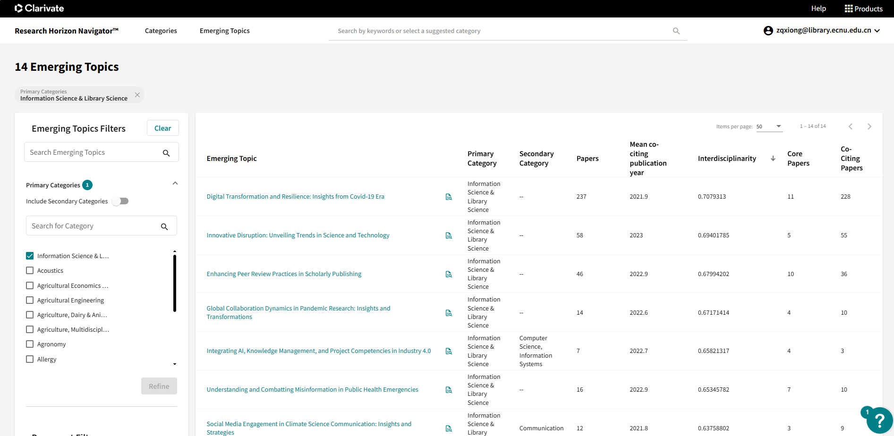
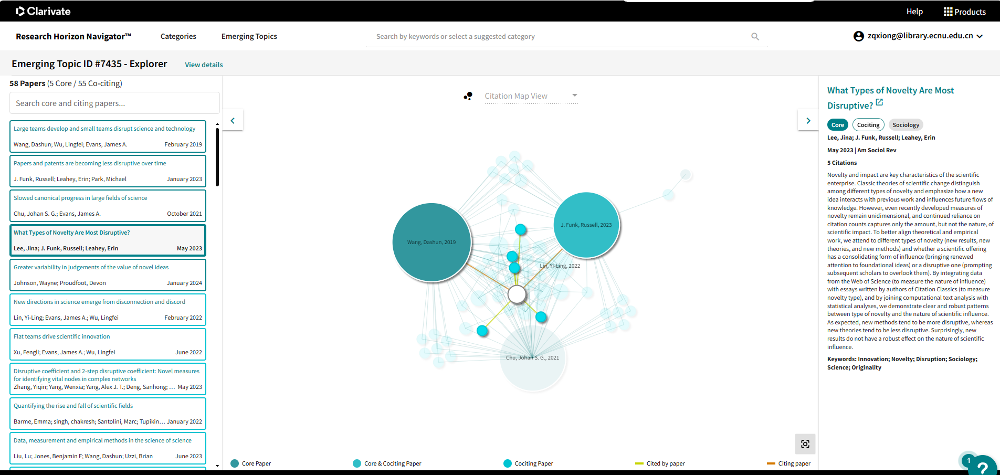
| 平台 | 数据与组织方式 | 适合用途 | 使用边界 |
|---|---|---|---|
| ESI | Web of Science引文数据、宽学科与高被引论文聚类 | 宏观表现、高被引成果和研究前沿入口 | 高被引筛选、宽学科分类和时间窗会影响结果 |
| SciVal | Scopus数据、直接引用形成Topic与Topic Cluster | 主题定位、发展势头、机构和合作分析 | Prominence不是质量或重要性的同义词 |
| Research Horizon Navigator | Web of Science/InCites体系中的近期引文与跨学科信号 | 新兴主题监测、从主题进入论文和机构 | 自动命名与早期信号需要人工校验，不能保证未来突破 |
平台指标会更新，访问权限也依赖机构订阅。书稿不应固定记录某一天的主题总数或界面按钮，而应要求读者在使用时保存查询日期、平台版本说明、筛选条件和导出结果。
7.8 Connected Papers与ResearchRabbit：从种子论文扩展阅读
Connected Papers和ResearchRabbit不主要用于对完整语料做规范的文献计量报告，而更适合从一篇或一组种子论文开始探索相近研究。它们把复杂的引用关系转化为可交互的阅读路径，连接了第五章的前沿探索、第六章的文献管理与本章的关系网络。
Connected Papers：相似性图不是引用树
Connected Papers官方介绍说明，其图谱相似度主要结合共被引和文献耦合信息，并不是简单把“谁引用谁”画成一棵树。两篇论文即使没有直接互引，只要共享许多参考文献或经常被共同引用，也可能彼此接近。
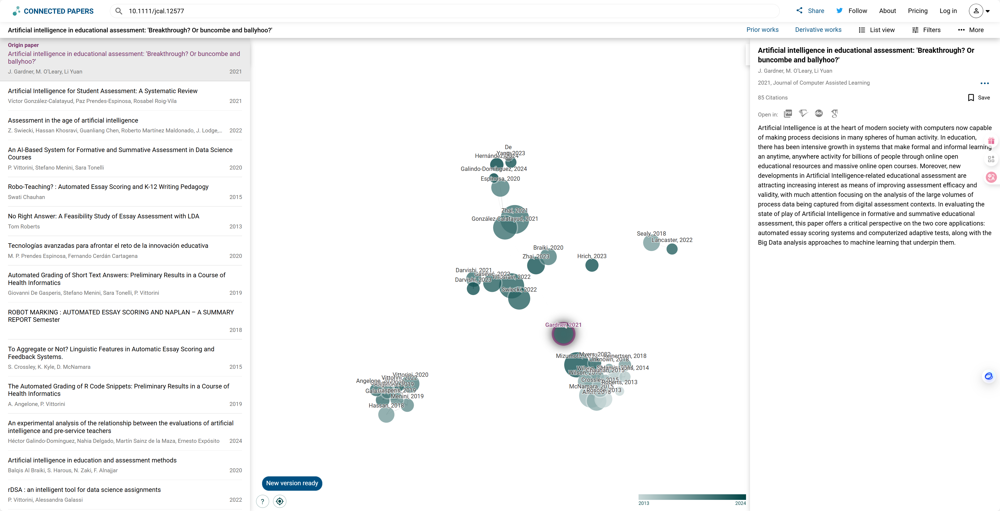
ResearchRabbit：把一次搜索变成持续发现
ResearchRabbit允许用户建立论文集合，并沿作者、概念、引用和参考文献关系继续探索。当集合加入一篇新论文后，推荐网络会随之改变，适合长期追踪一个正在发展的课题。
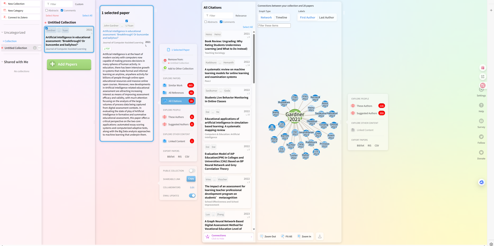
二者都不能单独证明系统综述的检索完整性。系统性检索需要预先设计数据库、检索式、日期、筛选与去重流程；推荐工具可以作为补充检索，并记录“由哪篇种子论文、在哪一天、通过哪种关系发现”。
7.9 贯穿案例：生成式人工智能与教师教育
下面把前述原则组织成一项可执行的小型研究。案例目标不是预先制造一幅“漂亮图谱”，而是回答三个相互关联的问题：该领域的主题怎样变化，近期研究形成哪些分支，主要合作网络具有怎样的结构。
| 子问题 | 必要字段 | 方法 | 主要输出 | 原文验证重点 |
|---|---|---|---|---|
| 主题怎样演化 | 题名、摘要、关键词、年份 | 共词网络、时间分段、突现 | 高频词、聚类、时间线 | 同义词是否合并，主题标签是否符合代表论文 |
| 近期研究形成哪些分支 | 参考文献、年份、DOI | 近三年文献耦合 | 分支网络、核心论文、共享知识基础 | 同一分支中的问题与方法是否真的相近 |
| 主要合作结构是什么 | 作者、机构、国家、年份 | 合著与机构合作网络 | 团队、桥接机构、跨国连线 | 名称消歧，超大团队和单篇合作的影响 |
具体操作可分为十步。
- 写出主题边界，区分生成式人工智能、一般人工智能、智能辅导系统与学习分析。
- 设计中英文检索词，在选定数据库中试检，阅读样本文献后修订词表。
- 固定检索日期、时间范围、文献类型和数据库，保存完整检索式与结果数量。
- 导出题名、摘要、关键词、作者、机构、年份、来源、DOI和参考文献；若字段缺失，调整分析计划。
- 保留原始导出，建立跨库去重规则和中英文术语表，记录所有合并与删除。
- 先做年份、来源、缺失值和文献类型统计，确认语料没有明显断层。
- 分别构建共词、耦合和合作网络，选择计数、阈值与时间窗，并做至少一次参数敏感性比较。
- 每个主要聚类选择代表文献，回读题名、摘要和全文，修订自动标签。
- 用“观察—解释—限制”写每个结果段，避免把相关网络写成因果关系。
- 归档检索式、原始数据、清洗表、同义词表、参数、软件版本、网络文件、图表和代表文献清单。
结果报告可以使用如下句式框架：“在数据库A、时间段B和检索式C形成的N条记录中，采用分数计数与最低出现次数T构建关键词网络，共保留M个词并形成K个聚类。聚类1由词项X、Y、Z及代表文献P、Q支持，主要讨论……。改变阈值后主干结构保持/发生变化，说明……。由于语料未覆盖……，本结果只描述……。”这个框架把数据口径、方法参数、结果证据和解释边界放在同一段中。
7.10 负责任地解释和使用指标
让定量评价支持而不是替代专业判断
《莱顿宣言》提出的核心方向是让定量评价支持质性与专家判断，结合机构使命，考虑学科差异，保持数据与计算透明，允许被评价者核验，并定期检查指标体系。这些原则不仅适用于机构排名，也适用于课程论文中的图谱解释。
负责任使用指标可以转化为六项实践：用多个指标观察同一问题；把原始数量与归一化结果并列；公开数据库、检索式和时间窗；允许名称与记录错误被修正；用代表文献验证自动标签；对可能诱发“追指标”行为的评价方案进行反思。一个指标一旦成为奖惩目标，研究者就可能调整署名、引用和发表策略来适应指标，指标与原始目标之间的关系也会改变。
十类常见错误
- 问题与方法错位：想解释政策因果，却只画发文量曲线。
- 把数据库当作全部文献：忽略语种、地区、文献类型和收录政策。
- 字段不支持方法：没有参考文献字段仍进行共被引或耦合分析。
- 实体未经清洗：作者、机构和关键词变体被当成多个节点。
- 混合来源不校准：把不同数据库的字段结构和覆盖范围直接拼接。
- 参数只为美观服务：不断改变阈值，直到出现预想中的聚类。
- 把颜色当结论：自动聚类名称未经代表文献验证。
- 把相关写成因果：网络接近、同时增长或共同出现被描述为相互导致。
- 把关注度当质量：高被引、高下载、Prominence或新兴主题被当作价值裁决。
- 无法复现：只保存一张图片，没有原始数据、清洗规则、参数和软件信息。
| 模块 | 最少报告内容 |
|---|---|
| 问题 | 研究对象、分析单位、概念边界和预期回答 |
| 数据 | 数据库、检索式、日期、时间范围、类型、语言、原始与去重数量 |
| 清洗 | 去重、作者/机构消歧、同义词、停用词、缺失字段处理 |
| 方法 | 关系类型、计数、阈值、时间切片、归一化、聚类和软件版本 |
| 结果 | 网络规模、主要聚类、代表节点、统计表与图例说明 |
| 验证 | 代表文献回读、标签修订、参数敏感性或跨方法核对 |
| 边界 | 数据库覆盖、引用时滞、学科差异、算法限制和不可作出的推断 |
| 归档 | 原始数据、清洗数据、词表、代码/参数、输出文件与查询日期 |
本章小结
信息计量把文献、作者、机构、关键词和参考文献转化为可分析的分布与关系。文献增长、老化、长尾分布和累积优势说明指标并不是均匀、即时和纯粹的质量信号；直接引用、共被引、文献耦合、共词和合作网络则从不同角度回答知识基础、近期分支、主题结构和社会协作问题。
CiteSpace、VOSviewer、bibliometrix/Biblioshiny和ITGinsight等工具各有侧重，ESI、SciVal和Research Horizon Navigator提供平台化的宏观线索，Connected Papers与ResearchRabbit适合从种子文献扩展阅读。无论使用哪种工具，可靠分析都遵循同一主线：问题先于软件，字段先于算法，清洗先于制图，代表文献先于标签，证据边界先于结论。图谱的价值不是替代阅读，而是帮助研究者更有依据地决定读什么、比较什么和继续追问什么。
思考与练习
- 选择“被引次数”“下载次数”和“政策文件引用”三个指标，分别说明它们记录的行为、适合解释的影响维度和最容易产生的误读。
- 用三篇假想论文画出直接引用、共被引和文献耦合关系，并说明为什么共被引更偏向知识基础、耦合更适合近期研究分支。
- 从一个数据库导出不少于50条主题文献，检查题名、关键词、作者、机构、年份和参考文献字段，列出哪些分析可做、哪些分析因字段不足暂时不能做。
- 为同一批关键词分别设置两个合理的最低出现次数阈值，比较网络规模、聚类和代表词是否改变，并说明最终阈值的依据。
- 用VOSviewer或CiteSpace制作一张图谱，为图中节点、连线、大小、颜色、距离和阈值写完整图注；再选择一个聚类回读至少三篇代表文献，修订自动标签。
- 使用Biblioshiny完成一次描述统计，再尝试保存相应的R脚本或完整操作记录，说明“可重复点击”和“可复现分析”的差别。
- 在ESI、SciVal或Research Horizon Navigator中任选一个平台，记录查询日期、数据口径、主题定义和指标含义，判断平台给出的一个方向应称为“热点”“前沿候选”还是“确定趋势”。
- 以同一篇种子论文分别使用Connected Papers和ResearchRabbit扩展阅读，记录新增论文从何种关系被发现，并与数据库主题检索结果比较遗漏与偏差。
- 设计一项评价“某教师发展计划是否促进跨机构合作”的研究，列出描述性计量能够提供的证据、因果判断还缺少的设计以及可能的混杂因素。
- 按表7-9审查一篇公开发表的文献计量论文，判断其数据、清洗、参数、验证和局限信息是否足以让他人复核。